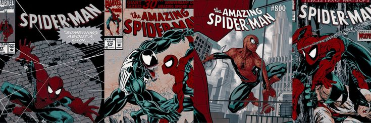
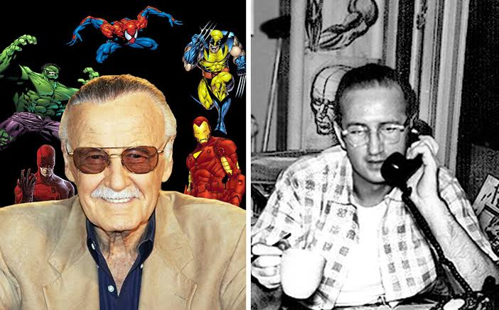
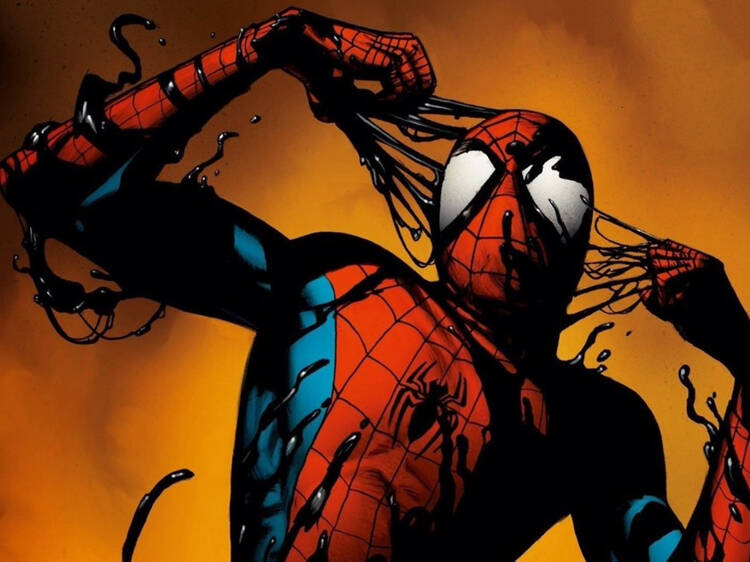
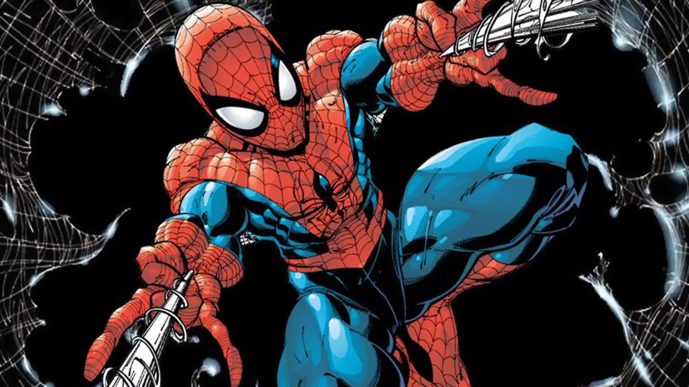
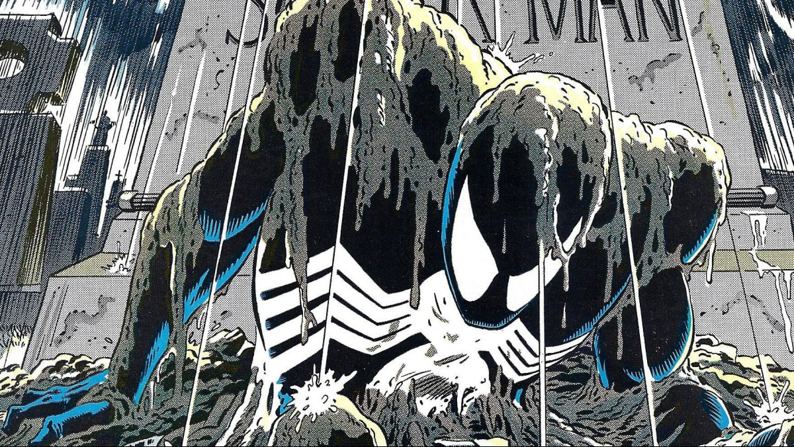

¿Qué es Spider-Man? (Biografía y Origen Detallado)
Spider-Man (Peter Benjamin Parker) es uno de los superhéroes más icónicos, complejos e influyentes en la historia de la cultura popular. Creado durante la Edad de Plata de los cómics, hizo su primera aparición oficial el 5 de junio de 1962 en la antología de historias de fantasía Amazing Fantasy #15 (con fecha de portada de agosto de 1962), publicada por la editorial Marvel Comics.
La historia transcurre en el vecindario de Forest Hills, en el distrito de Queens, Nueva York. Peter Parker es un joven huérfano de 15 años, tímido, con un rendimiento académico brillante pero víctima de acoso escolar en la preparatoria Midtown High School. Tras ser abandonado a corta edad por sus padres (los agentes secretos Richard y Mary Parker), Peter es criado por sus tíos paternos, Ben y May Parker, quienes se convierten en sus pilares morales.
Durante una exhibición pública sobre manipulación de radiación nuclear, una araña es expuesta accidentalmente a un haz de rayos radiactivos. Instantes antes de morir, la araña muerde a Peter en la mano, alterando su código genético y otorgándole capacidades físicas proporcionales a las de un arácnido. Al principio, impulsado por el deseo de ganar dinero rápido y llamar la atención, Peter diseña un traje y utiliza sus poderes en combates de lucha libre profesional. Sin embargo, tras negarse a detener a un ladrón común (Dennis Carradine) por pura apatía, ese mismo criminal asesina horas más tarde a su tío Ben en un robo domiciliario. Este acontecimiento traumático transforma la vida de Peter, llevándolo a asumir la identidad de Spider-Man bajo el precepto de que «un gran poder conlleva una gran responsabilidad».
Creadores Detrás del Personaje y su Aportación Técnica:
- Stan Lee (Stanley Martin Lieber - Guionista y Editor Jefe): Concibió la premisa original del personaje con la intención de crear a un héroe imperfecto, joven y plagado de dilemas personales. Fue responsable de escribir los diálogos, idear el concepto del "Sentido Arácnido", bautizar a la galería de personajes secundarios y establecer las bases morales de la franquicia.
- Steve Ditko (Dibujante y Co-creador Gráfico): Definió por completo la identidad visual de Spider-Man. Diseñó el traje rojo y azul con redes entrelazadas, la máscara completamente cerrada con grandes lentes oculares para ocultar su rostro, los dispositivos mecánicos lanzarredes (*web-shooters*) montados en las muñecas y los métodos acrobáticos de combate. Ditko también aportó un tono visual más sombrío, urbano y realista a la serie.
- Jack Kirby (Dibujante Consultor): Participó en las primeras etapas de conceptualización realizando bocetos iniciales y dibujó la icónica portada original de Amazing Fantasy #15 (entintada por Steve Ditko) que se convirtió en una joya de la industria.

Ficha Técnica: Poderes, Habilidades y Equipamiento
A diferencia de otros héroes invulnerables, el personaje destaca por la combinación de mutación genética e ingenio científico:
- Fuerza y resistencia sobrehumana: Posee una capacidad muscular modificada que le permite levantar entre 10 y 25 toneladas métricas en situaciones de estrés extremo, además de resistir impactos físicos de alto calibre.
- Adherencia a las superficies (Fuerzas de Van der Waals): Capacidad electrostática que le permite adherir cualquier parte de su cuerpo (manos, pies, espalda) a superficies verticales u horizontales a nivel molecular.
- Sentido Arácnido (*Spider-Sense*): Un sexto sentido precognitivo omnidireccional que le advierte sobre peligros inminentes milisegundos antes de que ocurran, conectándose directamente con sus reflejos motores (40 veces más rápidos que los de un atleta humano).
- Mecanismos Lanzarredes (*Web-Shooters*): Dispositivos mecánicos creados por Peter que se adaptan a sus muñecas. Utilizan cápsulas cargadas con un fluido químico sintético de su propia invención que, al contacto con el aire, se solidifica en fibras de alta resistencia a la tracción (capaces de contener a Hulk o frenar vehículos a gran velocidad). El compuesto se disuelve de forma natural tras 60 minutos.
- Intelecto de nivel genio: Es un experto en bioquímica, física aplicada, matemáticas e ingeniería mecánica. Ha desarrollado avances científicos importantes a lo largo de su vida adulta en laboratorios como Horizon Labs y su propia firma, Parker Industries.

Pilares del Proceso Creativo
- 1. La inspiración biológica: Stan Lee relató en múltiples entrevistas que la idea inicial surgió mientras observaba a un insecto trepar por una pared en las oficinas de Marvel. Al notar esa agilidad, pensó en crear un personaje capaz de escalar edificios y balancearse por la ciudad.
- 2. Ruptura del paradigma de los superhéroes adolescentes: A principios de la década de 1960, los personajes jóvenes en los cómics estaban relegados exclusivamente al rol de compañeros de apoyo (*sidekicks*), como Robin para Batman o Bucky Barnes para el Capitán América. Stan Lee y Steve Ditko rompen este esquema convirtiendo a un estudiante de preparatoria en el héroe principal e independiente.
- 3. Problemas reales y vulnerabilidad humana: Los creadores dotaron a Peter Parker de una vida personal caótica: lidiar con el acoso de Flash Thompson, conseguir dinero vendiendo fotografías de sí mismo al editor J. Jonah Jameson en el diario Daily Bugle, pagar las deudas médicas de su tía May y mantener altas calificaciones en la universidad Empire State University (ESU).

El Rechazo Inicial, el Éxito Comercial y Momentos Canónicos
Al presentar la idea a la directiva de Marvel, el dueño de la editorial, Martin Goodman, rechazó tajantemente el concepto. Argumentaba que al público le causaban repulsión las arañas, que el nombre "Spider-Man" resultaba desagradable y que un superhéroe no podía ser un adolescente lleno de dudas e inestabilidad económica.
Debido a que la revista Amazing Fantasy iba a ser cancelada en su número 15, Goodman autorizó a Stan Lee a incluir la historia de Spider-Man únicamente como material de relleno. Para sorpresa de la editorial, la edición vendió un porcentaje histórico de ejemplares, convirtiéndose en el cómic más rentable de Marvel en 1962. Esto llevó a la creación inmediata de su propia serie mensual, The Amazing Spider-Man, en marzo de 1963.
A lo largo de sus más de seis décadas de publicación continua, Spider-Man ha sido el centro de arcos narrativos históricos que cambiaron la industria del cómic:
- La Muerte de Gwen Stacy (1973 - *The Amazing Spider-Man #121-122*): Considerado el evento que puso fin a la inocente Edad de Plata de los cómics. Gwen Stacy, el primer gran amor universitario de Peter, muere tras ser arrojada desde un puente por el Duende Verde.
- La Saga del Traje Negro y el Origen de Venom (1984-1988): Durante el evento Secret Wars, Peter obtiene un traje simbionte alienígena que potencia sus habilidades pero altera su agresividad. Tras rechazarlo, la criatura se une a Eddie Brock para dar vida a **Venom**.
- La Saga del Clon (Años 90): Un complejo arco que involucra al científico Miles Warren (El Jackal) y la creación de Ben Reilly (Scarlet Spider), cuestionando la verdadera identidad del Peter Parker original.
- Civil War (2006): Presionado por Tony Stark (Iron Man), Peter revela públicamente su identidad secreta ante los medios de comunicación del mundo, sufriendo trágicas consecuencias personales.
Conclusión e Impacto en la Cultura Popular
Spider-Man revolucionó la narrativa moderna al demostrar que la verdadera grandeza de un superhéroe no radica en sus poderes sobrehumanos, sino en su capacidad para levantarse frente a la tragedia personal y mantener la integridad moral.
Su éxito mundial ha dado origen al concepto del **Spider-Verse**, expandiendo la franquicia hacia múltiples dimensiones e introduciendo a personajes clave como **Miles Morales** (un joven afrolatino de Brooklyn que asume el manto del héroe), **Gwen Stacy** (Spider-Gwen / Ghost-Spider) y **Miguel O'Hara** (Spider-Man 2099). Con películas taquilleras, series animadas y videojuegos galardonados, la frase «un gran poder conlleva una gran responsabilidad» sigue siendo el motor de uno de los personajes más queridos de la humanidad.

Galería de Villanos Principales y Archienemigos
Documental de Farid |
HOMBLE ALAÑA CANCION |
El Duende Verde (Norman Osborn) |
El Hombre de Arena (Flint Marko) |
Electro (Maxwell Dillon) |
Doctor Octopus (Otto Octavius) |
Mysterio (Quentin Beck) |